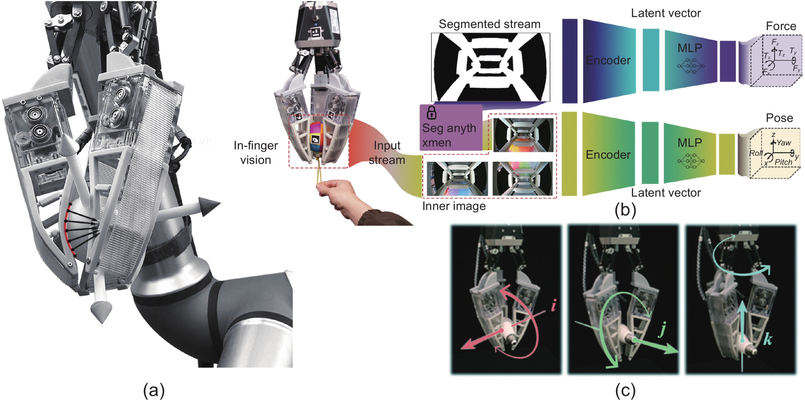

2026 · Journal Article
Multi-modal vision-based deformable perception for in-finger manipulation with soft active surfaces

Abstract
Enabling robots to manipulate objects dexterously within their grasp often requires complex multi-fingered hands with dense, multi-modal sensor arrays. This complexity can limit practicality and robustness, especially in confined spaces. This study challenges that paradigm by introducing a robust multi-modal perception method that derives 6D forces and poses from the large-scale deformation of a soft finger, using only a single internal camera. We propose ActiveSPN2, a robot gripper with a soft active surface designed for in-finger manipulation in constrained environments, featuring multi-modal perception through a vision-based deformable perception architecture. By tracking the real-time deformation of the internal Soft Polyhedral Network, we achieve real-time, multi-modal vision-based perception that provides 6D forces and object pose estimation during in-finger manipulation. Quantitatively, the proposed force perception model achieves an average accuracy of approximately 0.286 N on the test set, indicating reliable generalization under unseen manipulation conditions. A series of experiments were conducted on the ActiveSPN2 gripper using the proposed vision-based deformable perception approach, demonstrating the effectiveness and robustness of the strategy.
Links
BibTeX (Download)
@article{Li2026ActiveSPN2,
title = {{Multi-modal vision-based deformable perception for in-finger manipulation with soft active surfaces}},
author = {Sen Li and Chaoyang Song and Fang Wan},
journal = {Biomimetic Intelligence and Robotics},
year = {2026},
doi = {10.1016/j.birob.2026.100326},
pages = {100326},
url = {https://doi.org/10.1016/j.birob.2026.100326},
note = {Published online}
}
Author preprint · Publisher’s article-in-press PDF